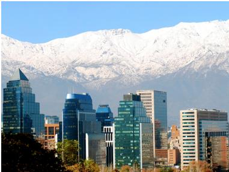
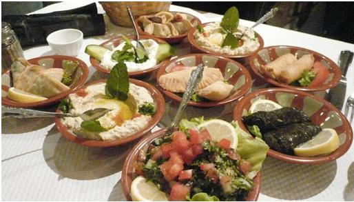
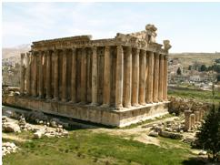
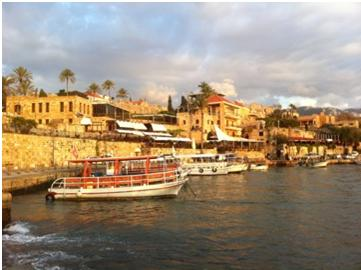
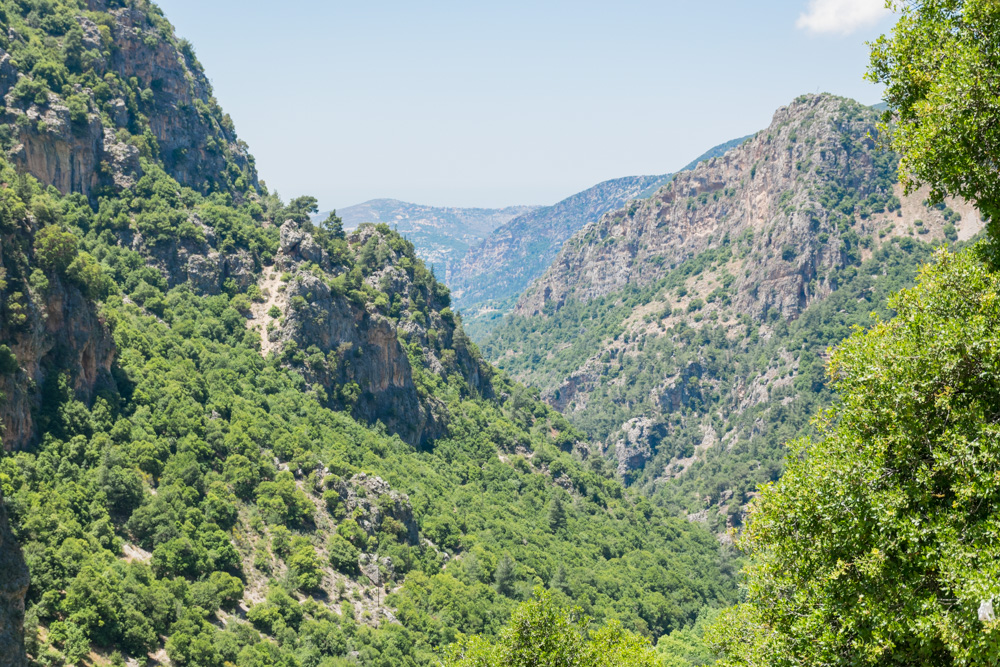
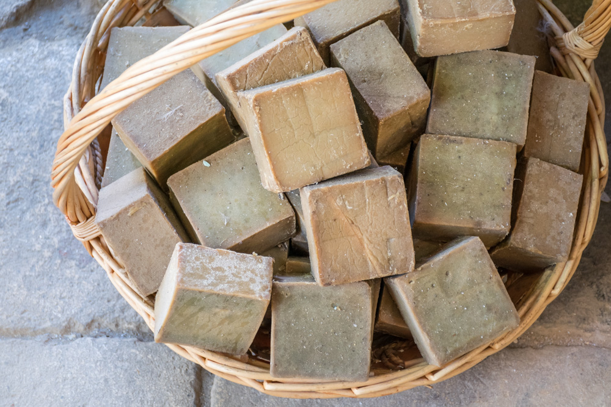
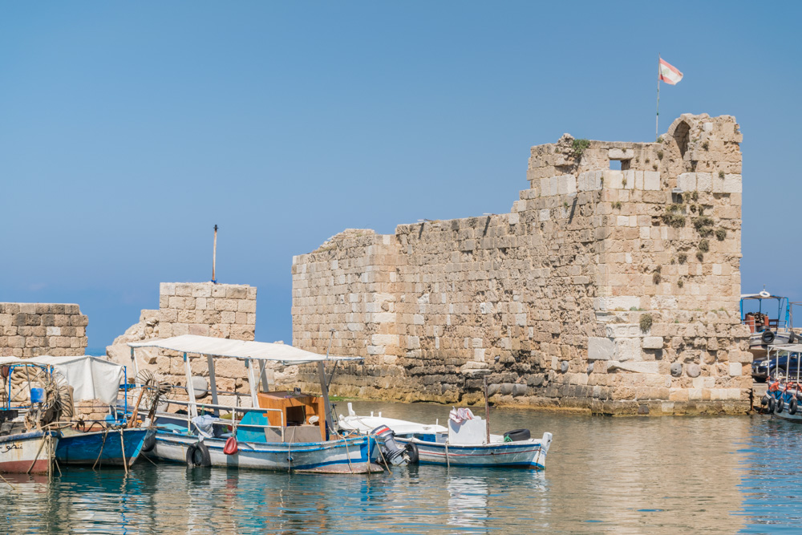
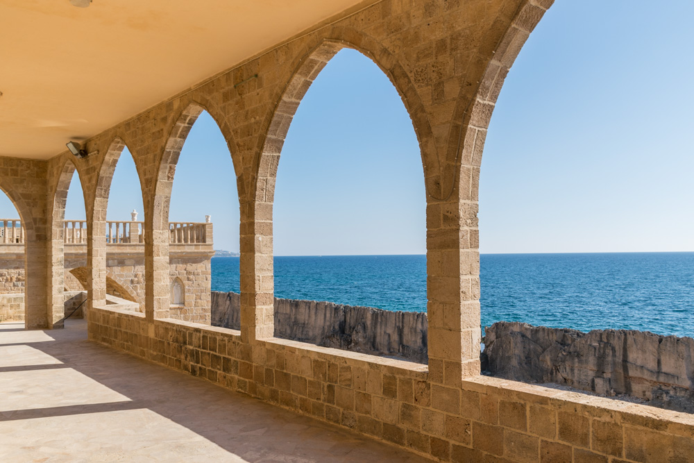
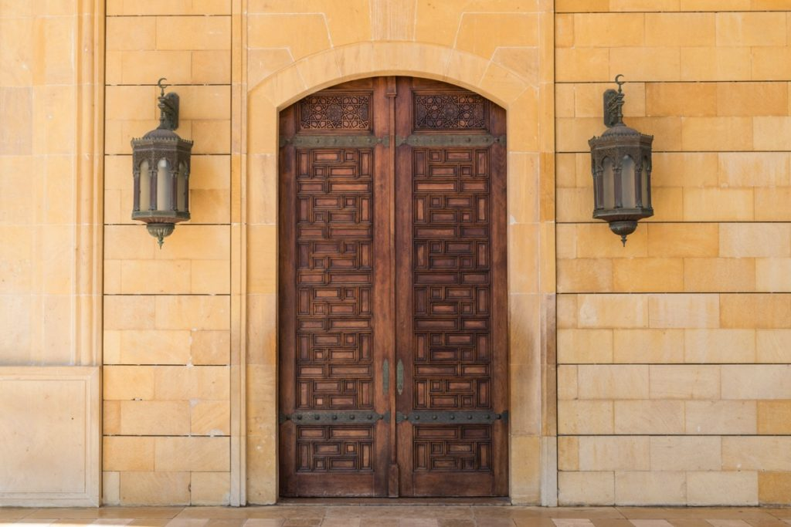

Let's Discover Lebanon
Le Liban (en arabe : لبنان / lubnān), en forme longue la République libanaise (en arabe : الجمهورية اللبنانية / al-jumhūriyya al-lubnāniyya), est un pays du Proche-Orient. En grande partie montagneux, il partage ses frontières avec la Syrie au nord et à l'est sur 376 km, Israël au sud sur 79 km et, au large de ses 220 km de côtes dans le bassin levantin (partie orientale de la mer Méditerranée) à l'ouest, avec Chypre (soit l'Union européenne). Beyrouth en est la capitale.
La langue officielle est l'arabe. Le français, ayant perdu ce statut (il garde tout de même sa présence dans la constitution), est la langue secondaire, employée notamment dans l'enseignement (tout comme l'anglais). La monnaie officielle est la livre libanaise.
10 raisons de visiter le Liban
Montagne
Et voilà la beauté naturelle du Liban. Pour un pays du moyen orient, le Liban a plein de montagnes sympa qui viennent avec des activités fun.Sans compter le ski, deux exemples majeurs sont la grotte de Jeila qui a candidater pour être une des sept nouvelles merveilles du monde et le gouffre des trois ponts avec son impressionnante chute d’eau. Les vacanciers de type actifs apprécieront les randonnées et les spots d’escalade pendant que d’autres se relaxeront dans l’un des nombreux restaurants et lieux de pique-nique. On peut aussi ajouter à cela de magnifiques spots où l’on peut camper pour profiter de l’environnement tranquillement.
Plage
Petit pays, le Liban est l’un des rares où l’on peut skier le matin et se baigner l’après-midi. La côte méditerranéenne y est magnifique et très variés. Plage de sable, Falaises, rochers, il y a vraiment de quoi vous en mettre plein la vue. On peut même se baigner toute l’année pour les plus courageux, même si l’été c’est quand même mieux !
Histoire
Terre d’histoire, on dénombre beaucoup de site historique au Liban : Sour, Tripoli, Saida, Baalbeck (voir plus bas), Byblos, Beirut et Beiteddine. Il est très difficile de visiter l’ensemble de ses sites en passant quelques jours au Liban. Il vous faudra donc rester longtemps si vous voulez tous les visiter ou revenir plusieurs fois.
Nourriture
Très diversifiée à l’image du pays et de sa population, elle marie à merveille la richesse de la terre méditerranéenne et les produits de la mer. Véritable reflet de la traditionnelle hospitalité libanaise, elle est très riche en saveur et en couleur.
-Tout est délicieux dans la cuisine Libanaise :
-Les mezze représentés par les kebbé, la taoublé ou encore l’hommous
-Les plats : chichtaouk (poulet mariné au citron), les chaouarma et falafels en assiette ou en sandwich,
-Les desserts : Baklava, awamat …
-Sans oublier le vin libanais qui est principalement réalisé dans la vallée de la Bekaa.
Baalbek
C’est le site historique du Liban. Un véritable trésor archéologique. Le temple de Bacchus est réputé pour être le temple le mieux conservé du monde. Le temple de Jupiter y est aussi très impressionnant avec ses 6 colonnes. A noter tout de même qu’il est déconseillé d’arpenter les moindres recoins de la ville, celle-ci étant la ville d’origine du Hezbollah. Mais le site historique est un des hauts lieux touristique du Liban, donc aucun souci !
Byblos
L’un des plus vieilles villes du monde contenant un important site archéologique. Le port y est très agréable, vous pourrez y trouver de délicieux restaurants. Je vous conseille de trouver un restaurant en hauteur afin de profiter d’une très belle vue sur le port.
Diversité
Très petit pays mais incroyablement diversifié. L’état reconnaît 18 religions dans le pays. Selon Wikipédia, il y aurait 54% de musulmans (50% chiites et 50% de sunnites), 41% de chrétiens. Beirut est à l’image d’Istanbul très hétéroclite et cela se ressent énormément lorsque l’on parcourt la ville. C’est l’une des choses qui fait que l’on se sent bien au Liban !
Météo
Même si il est plutôt conseillé de partir au Liban au printemps (mars – juin) et en automne (septembre – décembre). Toutes les saisons sont agréables au Liban si vous ne craignez pas la chaleur l’été (35° en moyenne). En décembre, comptez aux alentours de 8° en moyenne. M’enfin, y a plus de saison paraît-il…
Plongée sous marine
En plein développement depuis quelques années, la popularité de la plongée sous marine au Liban n’est plus à faire. La côte méditerranéenne Libanaise contient énormément de récifs, de canyons et de grottes sous-marines qui sont très plaisants à découvrir surtout dans le cadre d’une activité sportive!
Français
Le saviez-vous ? On parle Français au Liban. Et cela depuis la fin de la première guerre mondiale. En effet, à la chute de l’Empire Ottoman, le Liban était sous protectorat français, ainsi la majorité des Libanais apprenaient le Français en temps que deuxième langue. Même si l’anglais remonte en force dans le pays, il y a encore énormément de Libanais qui parle français !
Conseils & Infos Pratiques
Comment Se Déplacer Pour Visiter Le Liban ?
La meilleur moyen de visiter le Liban est d’avoir sa propre voiture. Il y a beaucoup de choses à voir et certains sites touristiques peuvent être en dehors des villes.
Bien qu’il soit possible de rejoindre les différentes villes du Liban depuis Beyrouth, ces trajets vous prendront du temps. La voiture de location sera bien plus confortable pour un voyage au Liban.
Soyons honnête, la conduite au Liban n’est pas facile. C’est d’ailleurs le pays qui m’a le plus marqué pour la conduite. Alors certes il y a moins de moyens de transport hétéroclites qu’en Inde mais il n’y a absolument aucune règle. En plein Beyrouth, certains conducteurs s’étonnent de vous voir respecter les feux rouges. Se garer au milieu d’un rond point peut arriver. Remonter l’autoroute en sens opposé sur la bande d’arrêt d’urgence semble monnaie courante.
Si vous n’êtes pas à l’aise au volant, je vous déconseille de conduire au Liban. Dans le cas contraire, on s’habitue tout de même assez vite à la seule et unique règle du Liban concernant la conduite, à savoir : il n’y a pas de règle.
Faut-Il Un Visa Pour Un Voyage Au Liban ?
En arrivant à l’aéroport de Beyrouth, j’ai découvert une autre aberration du ministère des Affaires Etrangères français (la première étant la sur-exagération des risques sécuritaires).
Et pourtant, ce fut certainement le passage à l’immigration et contrôles les plus rapides que j’ai connu … A peine 20 minutes après l’atterrissage, j’avais passé tous les contrôles, visa en poche et bagages avec moi.
Ce fut tellement rapide que j’ai eu le temps de prendre un bon petit déjeuner avant d’aller profiter de la corniche de Beyrouth au lever de soleil !
MUST VISIT
Vallée De La Qadisha
Localisée dans le nord du Liban, la vallée de la Qadisha se situe au sein de la chaîne du Mont-Liban. L’altitude oscille entre 500 et 1700 mètres.
La Vallée de la Qadisha est l’un des principaux sites d’établissement des tous premiers monastères chrétiens dans le monde. On en recense plusieurs dans cette vallée du Liban. D’ailleurs, le mot qadisha signifie saint en syriaque.
Au delà de ses monastères, la vallée offre des paysages magnifiques. Les pentes y sont particulièrement raides. C’est d’ailleurs pour cela que des monastères y ont été construits. Les pentes raides faisaient offices de remparts naturels pour protéger les monastères.
Parmi ces monastères, j’ai visité le monastère de Qozhaya également appelé couvent Saint Antoine de Qozhaya. Fondé au IVème siècle, ce monastère semble réellement incrusté dans la roche ! Ces monastères sont bien évidemment toujours habités, comme partout dans le reste de la vallée et du Liban.
Un peu plus en altitude (autour de 2000 mètres), la forêt des cèdres de Dieu recense encore quelques cèdres. Auparavant, les cèdres couvraient une partie bien plus importante de cette région montagneuse.
Au cours de ces 2 jours dans la vallée de la Qadisha, j’ai également eu l’occasion de visiter d’autres monastères et petits villages, ainsi que la ville de Bcharré, principale ville de la vallée. A noter, en hiver, il est possible de skier dans les environs de Bcharré.
Tripoli
Après la vallée de la Qadisha, retour sur la côte, pour visiter Tripoli. Tripoli est la dernière grande ville au nord du Liban avant la frontière avec la Syrie. Cette ville du Liban est à majorité musulmane (sunnite).
Changement de planète ! Là où la vallée de la Qadisha était calme et reposante, Tripoli grouille d’activité. Routes encombrées, vieille ville sur-animée, Tripoli ressemble clairement au Caire, en plus petit. D’ailleurs, Tripoli est considérée comme l’une des villes où l’influence mamelouk est la plus visible.
C’est l’un des gros coups de coeur de ce voyage au Liban ! Une ville à ne pas manquer lors d’un premier voyage au Liban. Tripoli ne pourra que séduire ceux qui aiment les vieilles villes arabes. La vieille ville de Tripoli,
labyrinthe de ruelles recensent de nombreux trésors :
-mosquée Al Mansouri
-la citadelle de Tripoli (قلعة طرابلس en arabe) également appelée château Saint-Gilles ou forteresse du Mont-Pelerin
-de nombreux caravansérails
-khan al saboun où l’on y vend / fabrique des savons à base d’huile d’olive et de laurier (savon d’Alep)
de nombreuses autres mosquées, hammam ou écoles religieuses
A Tripoli, il faut prendre le temps de se perdre dans les ruelles des souq de la vieille ville.
De Batroun À Jounieh En Passant Par Byblos
En retournant vers Beyrouth, plusieurs villes intéressantes peuvent être visitées comme Batroun, Jounieh ou la plus connue Byblos.
Ces villes sont plutôt petites et il est tout à fait possible de visiter plusieurs villes sur une même journée. Byblos reste la ville la plus intéressante sur cette partie de la côte. Entre les souks rénovés de la vieille ville et les ruines de Byblos, on peut facilement passer une journée à visiter la ville et profiter des restaurants / cafés. J’aurai l’occasion de vous reparler de Byblos sur le blog, dans un futur billet dédié à la ville. Cette ville fait pour moi partie des incontournables d’un voyage au Liban.
En arabe, Byblos est appelée Jbeil. A noter, pour la plupart des villes, vous aurez l’occasion lors de votre voyage au Liban de voir qu’il existe 2 noms de ville, un nom historique et un nom en arabe.
Batroun est plus petite mais mérite vraiment une halte. Les ruelles du vieux Batroun sont charmantes. On y trouve des petits boutiques et des restaurants vraiment sympa.
A Batroun, ne manquez pas les visites suivantes :
-cathédrale Saint-Étienne (Mar Estephan)
-les vieux souks de Batroun
-Saydet al Bahr aussi appelée Lady of the Sea chapel, une chapelle construite sur les ruines d’une église byzantine, en bord de mer
depuis cette chapelle, vous pouvez voir les ruines des remparts phéniciens
-Makaad El Mir et les ruelles proches qui sont très charmantes
la plage El Bahsa juste à côté de Makaad El Mir
Jounieh se situe plus au sud, à une vingtaine de kilomètres au nord de Beyrouth. Le centre historique de Jounieh a été très bien rénové tout en gardant le charme des petites villes du Liban. Un arrêt à Jounieh peut être intéressant avec de retourner sur Beyrouth. Parmi les 3 villes citées ici, si le timing de votre voyage au Liban est serré, je vous recommande de privilégier plutôt Batroun et Byblos qui sont les 2 villes que j’ai préféré sur cette partie de la côte libanaise.
Beyrouth
Visiter Beyrouth en une journée est assez difficile. Il y a pas mal de choses à voir à Beyrouth. De plus, pour prendre le pouls de la ville, il faut aussi prendre le temps de profiter des cafés et restaurants. Et non pas seulement courir aux 4 coins de la ville.
Si vous vous demandez que faire à Beyrouth en une journée, voici une petit planning réaliste pour avoir un aperçu de la capitale libanaise :
commencer la visite de Beyrouth par le centre avec la mosquée Al Omari, la place des Martyrs ou encore les Beirut Souks (souq moderne)
déjeuner et balade dans les quartiers de Gemmayzeh ou Achrafieh
visite du Musée National de Beyrouth l’après-midi
finir la journée en profitant du coucher de soleil sur la grotte aux pigeons dans le quartier de Raoucheh
Une journée bien chargée mais qui vous donnera un bon aperçu de Beyrouth. Et nul doute qu’une simple journée de voyage à Beyrouth vous donnera l’envie d’y revenir … pour plus longtemps !
Vous avez un peu plus de temps à consacrer à la capitale libanaise ? Vous comptez visiter Beyrouth en 3 jours ou en 4 jours ? Cette durée est bien plus raisonnable pour profiter de la plus grande ville du Liban.
Avec une telle durée, vous aurez vraiment le temps de bien visiter Beyrouth en profitant des cafés / restaurants, du bord de mer, tout en visitant les différents quartiers de Beyrouth.